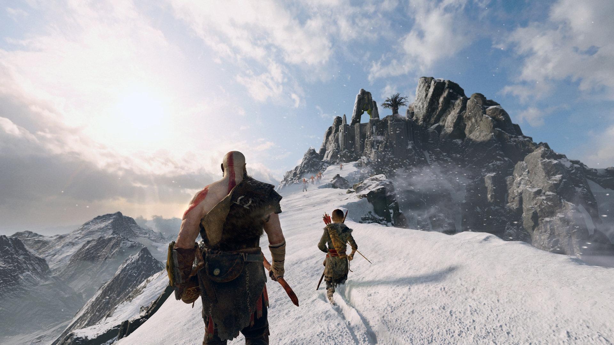
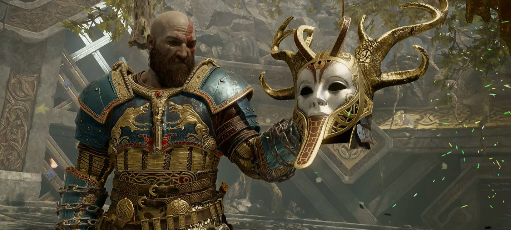

Бог войны бегает с пацаном, и даёт все по лицу кулаком, или кидается топором
Ещё до официального анонса о возможной разработке продолжения стало известно вскоре после того, как креативный директор Кори Барлог в одном из интервью подтвердил, что God of War 2018 года не станет последней игрой для главного героя Кратоса, и что сеттинг будущей игры серии по-прежнему будет основан на скандинавской мифологии и будет включать Атрея, сына главного героя. Вскоре после данных заявлений, команда разработчиков неоднократно намекала о скором анонсе сиквела. Так, например, в конце игры God of War упоминается приближение Фимбулвинтера — трёхлетняя зима, за которой следует Рагнарёк, конец света в скандинавской мифологии. Помимо основного финала, в игре также присутствует секретная концовка, в которой можно увидеть, как главные герои в сновидении встречают незнакомого гостя возле своего дома. Им оказывается скандинавский бог Тор, который возможно будет противостоять Кратосу и Атрею в следующей игре. В апреле 2019 года Monica Studio в очередной раз упомянула о продолжении, когда выпустила динамическую тему для God of War с изображением главных героев на лодке, на которой можно было заметить руны, которые изображали надпись Ragnarök is coming. В том же месяце Кори Барлог опубликовал серию сообщений в своём Твиттере, в которых рассказывал о процессе разработки God of War, вышедшей в 2018 году. Публикации не только содержали интересные факты о разработке, но и секретное послание, которое можно было расшифровать как Ragnarök is coming, опять-таки напрямую намекая о том, что скорый анонс приближается. Некоторое время спустя, 16 сентября 2020 года окончательно состоялся официальный анонс игры в рамках презентации PlayStation 5 Showcase, на которой был показан краткий тизер-трейлер с надписью Ragnarök is coming, тем самым подтверждая основную тему игры, о которой разработчики намекали долгое время. Из представленного трейлера также стало известно, что выход игры запланирован на 2021 год эксклюзивно для игровой приставки PlayStation 5.
 